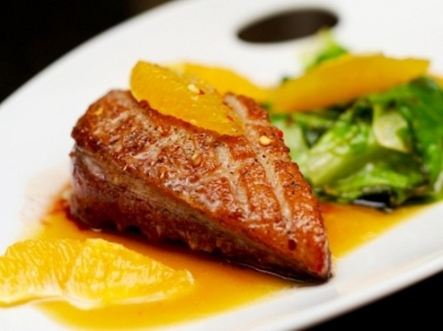

Vịt sốt cam

Nguyên liệu
- 120g thịt vịt quay (cắt lát mỏng)
- 1 trái cam
- 1 muỗng cà phê bột quế
- 3 star anise
- 3 muỗng canh nước gà (nấu từ cánh gà, cà rốt, củ
cải và hành tây)
- 30g mấm
- 10g gừng (cắt sợi mỏng)
- 50g cải xanh
- 1 muỗng canh nước tương
- 2 muỗng canh nước tương đậm đặc
- 1 muỗng canh dầu olive
- 1 muỗng cà phê muối
Hướng dẫn thực hiện
- Khi dầu vừa nóng, cho gừng và star anise vào, tiếp đến cho thịt vịt vào
xào khoảng 2 phút.
- Cho nước cam, nước gà, nước tương, bột quế và nấu cho đến khi nước sốt
hơi đặc, mêm cho vừa ăn.
- Trần sơ rau cải để ăn kèm với thịt vịt.